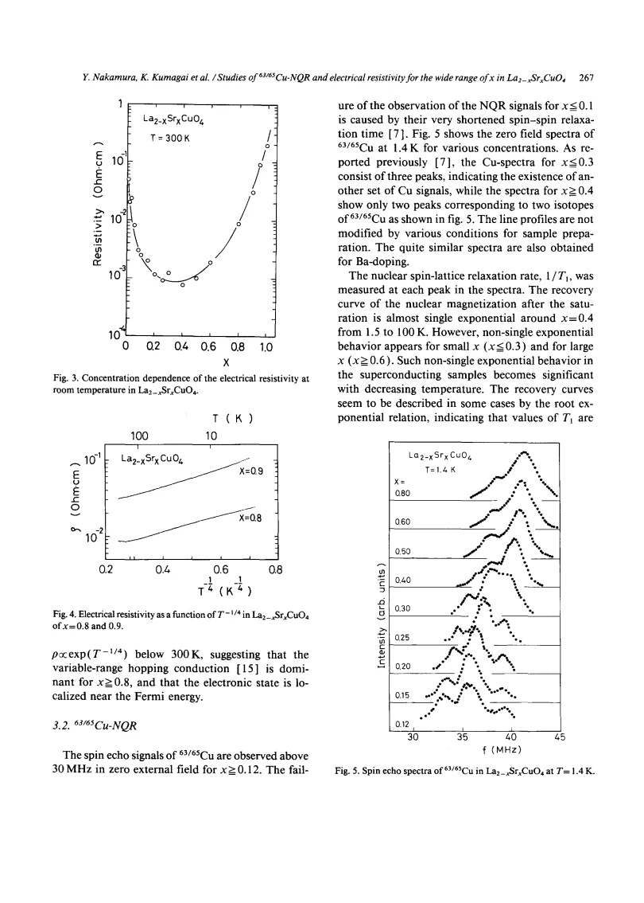
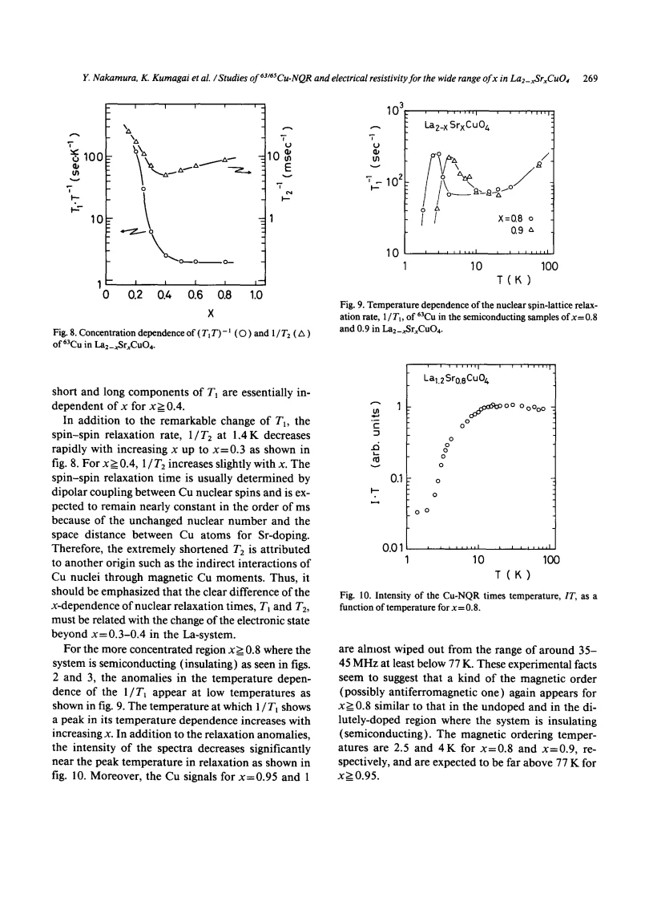

experiment · Nakamura · supplied source 1989
Studies of 63-65Cu-NQR and electrical resistivity for the wide range of x in La2-xSrxCuO4
Cu NQR and resistivity change substantially between ordinary superconducting doping and the very high-Sr localized compositions.
The question: How do local spin response and bulk transport change across x up to 1?
Before you start: the few terms you need
- LSCO: layered La2-xSrxCuO4; nominal x is Sr per formula unit
- Local probe: a distribution can matter even when the bulk average barely changes
See → explain → test
Understand it in four pictures.
Picture 1 / 4
Follow a broad composition range
Look for: The study extends well beyond the usual superconducting dome.
Swipe across the picture to read every label, or enlarge it below.
- Low x
- Intermediate x
- Very high x
Teaching schematic. Source regimes in a very broad ceramic composition series; no calibrated universal phase boundaries.
Large-x chemistry must not be treated as a small extension of optimal LSCO.
Picture 2 / 4
Count isotopes and environments
Look for: Complex spectra at smaller x simplify to isotope peaks at higher x.
Swipe across the picture to read every label, or enlarge it below.
- Smaller x
- x above about 0.4
Teaching schematic. The source retains uncertainty in its earlier A/B interpretation; these panels avoid inventing relative peak areas.
A spectral simplification accompanies changed electronic response.
Check the original: PDF p. 3
Picture 3 / 4
Compare local and bulk probes
Look for: Korringa-like rates coexist with metallic transport over part of the range.
Swipe across the picture to read every label, or enlarge it below.
- Cu recovery
- Electrical resistivity
Teaching schematic. Neither observable by itself gives a unique microscopic scattering rate.
A local nuclear response and a bulk transport law are complementary tests.
Picture 4 / 4
Do not equate lost echo with vanished nuclei
Look for: Near x≥.8 low-T relaxation anomalies accompany signal loss.
Swipe across the picture to read every label, or enlarge it below.
- Visible echo
- Rapidly relaxing fraction
Teaching schematic. Missing intensity denotes nuclei not detected under the pulse conditions, not removed atoms.
The source proposes magnetic ordering but does not measure a charge amplitude from wipeout.
Predict before revealing
If a ceramic at very high Sr content follows an approximate hopping law, does that prove its nuclei have disappeared?
Choose an answer, then compare the reasoning.
The missing echo concerns relaxation and resonance windows; transport concerns charge conduction. Neither removes nuclei.
Read the answer
No, transport and NQR visibility measure different things The missing echo concerns relaxation and resonance windows; transport concerns charge conduction. Neither removes nuclei.
Go deeper Follow the full argument
Scope and sample preparation
Nakamura and Kumagai combine Cu NQR with electrical resistivity over a very wide Sr substitution range, reaching x = 1. Solid-state reacted powders are checked by x-ray diffraction for the K2NiF4-type structure, and resistivity uses four-probe contacts. The c-axis lattice parameter first grows and then falls above roughly x = 0.3 to 0.4. The authors report superconductivity over a moderate substitution interval, with bulk evidence from susceptibility and heat capacity in part of that range. Extending to x near 1 accesses a chemically and electronically different localized regime. Nominal Sr content across this range is not automatically identical to a calibrated mobile-hole density.
Transport distinguishes multiple regimes
Low-x samples are insulating, intermediate compositions become metallic and superconducting, and compositions beyond roughly x = 0.8 show semiconducting resistivity. The room-temperature resistivity has a broad minimum near x = 0.3 to 0.4 before growing strongly. For high-x samples the logarithm of resistivity plotted against T^(-1/4) is approximately linear, interpreted as variable-range hopping. That is evidence for a transport regime with localized electronic states near the Fermi level under the source assumptions. Grain boundaries, sample chemistry and disorder matter for ceramic transport. A fitting exponent is not an independent determination of the microscopic density of states or localization mechanism.
Spectra and distributed recoveries
Cu echoes are observed readily above 30 MHz for sufficiently doped samples; failure at lower doping is attributed to very short transverse relaxation. Smaller-x spectra have extra local-environment peaks in addition to the two isotope resonances. Above x about 0.4 the simpler two-peak spectrum remains. Magnetization recoveries are nearly single exponential around x = 0.4 but develop multiple components at smaller and larger substitutions. The paper presents the longest-time recovery component for practical comparison, explicitly acknowledging a distribution. A rate plotted for that component therefore cannot be equated to an unbiased whole-sample average or to an exhaustive microscopic map.
Superconductivity and metallic relaxation
In superconducting samples the Cu spin-lattice rate falls below Tc without the standard Hebel-Slichter enhancement and with a power-like trend. In much of the nonsuperconducting metallic region T1T is approximately constant, the Korringa relation. Both1/T1T and transverse relaxation change sharply with increasing Sr toward x = 0.3 to 0.4. Enhanced rates at lower substitution are interpreted as electronic spin correlations and indirect nuclear coupling rather than ordinary nuclear dipole effects alone. The source also revisits its earlier magnetic explanation for split lines: absence of matching relaxation anomalies and NMR evidence makes that long-range-order assignment unlikely. This self-correction is part of the paper, not a conclusion that every local line is magnetically ordered.
The high-x anomaly and its limits
At x = 0.8 and 0.9 the rate develops low-temperature peaks and temperature-corrected intensity falls; even higher-x signals become difficult to see in the usual frequency window. The authors suggest a renewed magnetic phase, possibly antiferromagnetic, in the localized regime. That assignment remains tentative: intense relaxation, changing frequencies and inaccessible echoes can all reduce detected intensity. The reported behavior is not a direct measurement of an order-parameter amplitude. For comparison with later literature, retain the historical preparation, the very broad chemical range and the selected recovery component. Modern near-one-eighth stripe questions and heavily overdoped x = 0.33 muon searches address different regions and should not be folded into one universal picture.
How to compare the evidence
Two selection effects should stay visible when comparing this early survey with later LSCO work. First, the reported relaxation may be the longest recovery component, because the whole recovery is not always a single exponential. Its doping trend is therefore not necessarily the trend of a spatially averaged rate. Second, a nucleus whose transverse decay becomes too rapid may fail to produce a detectable echo even though it remains in the sample. Combining intensity loss with a relaxation anomaly motivates a magnetic interpretation, but does not determine a unique ordered structure. Finally, compositions approaching x = 1 are outside the chemical range used in the ordinary cuprate superconducting dome. Their localized behavior must remain attached to these particular ceramic preparations and nominal compositions.
Translate the mathematics Key equations and symbol meanings
T1T = constant
Symbols: T1: nuclear spin-lattice relaxation time; T: temperature.
Korringa-like phenomenology over the source interval; it does not alone prove a completely uncorrelated metal.
ρ(T) ∼ ρ0 exp[(T0/T)^(1/4)]
Symbols: ρ: resistivity; ρ0,T0: fit scales.
Variable-range-hopping interpretation for the very-high-x ceramic samples; dimensional and disorder assumptions matter.
Read the evidence A guided look at the original figures

Open the full original page ↗

Open the full original page ↗
What this paper does—and does not—establish
- Historical 1989 wide-composition ceramic study.
- Nominal x is not a universal calibration of mobile hole density over the entire range.
- Multicomponent recovery and limited detection affect reported rates and intensities.
Explain it back.
Try answering aloud before opening the explanation.
Why is the plotted rate not always a mean?
The source selects the longest recovery component when rates are distributed.
What was reconsidered about split lines?
The early long-range magnetic-order explanation became unlikely without corresponding anomalies.
Is high-x magnetic order fully established?
It is proposed from anomalies, with the type still tentative.
Connect the next paper.
Source version, reading coverage and preservation
Complete supplied substantive text read; selected main figure and equation pages rendered and visually checked
Reviewed body pages: 1, 2, 3, 4, 5, 6, 7. References checked as a bibliography but cited works were not independently re-read.
Original file retained byte for byte. SHA-256: 3373e11960560b46d892111d24fa7c4f155ff3f256b0d47927c8f259cea45ff8
Filename: PhysicaC - Nakamura - Cu NQR and resistivity across LSCO doping - 1989.pdf.